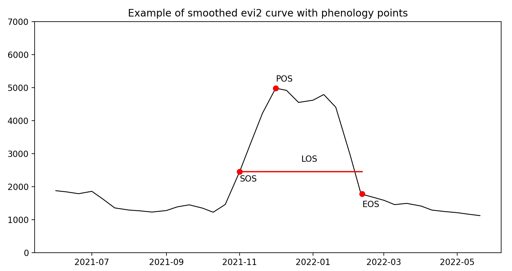

single-year classification¶
================================================================================================================================
Building a single-year random-forest model from the smoothed time-series:¶
Step 1: Choose the feature model (variable inputs to use in the model)¶
Three types of features can be used in the model:
spectral-index stats (
si_vars): Summary statistics and phenological variables for the modelling year generated from smoothed time-series data for each selected spectral imagesingleton variables (
singleton_vars): Ancillary raster datasets covering the full AOI for a single point in time (can be constant or annual, but do not provide time-series data within a given year.)segmentation variables (
poly_vars): Outputs from segmentation model (or other object-extraction method), which, unlike singleton_vars, are already parsed by cell, but like singleton_vars, do not have a time-series element.
Choose a unique feature_model name for the desired combination of features
Feature models are stored in the dictionary (feat_mod_dict) at “/home/downspout-cel/paraguay_lc/Feature_Models.json”.
This allows quick lookup by name of the feature set (spec_indices, si_vars, singleton_vars, and poly_vars) and the full band sequence of the resulting stack (in case the internal band names get stripped).
spectral-index variables¶
Spectral-index stats contain both an index component and a statistic component. For the index component, see vegetation indices for options. The default RF model uses all six indices that we generated smoothed time series for in the pipeline process (evi2, gcvi, wi, kndvi, nbr & ndmi). Indices can be readily dropped from new models, but adding new indices will require running the ts pipeline step to generate time series data for the index for all cells involved.
The statistic component regards how the time-series data for a spectral index are to be summarized into a single value, for example from summary statistics or phenological variables for the modelling year. The default RF model uses (Max,Min,Amp,Avg,CV,Std,Jan,Feb,Mar,Apr,May,Jun,Jul,Aug,Sep,Oct,Nov,Dec) but variables can readily be dropped or added for new models.
Note that the year is defined by the parameters start_yr and start_mo, such that it starts on the first of start_mo of start_yr (so a year can be 1/Jan-31/Dec, 1/Apr-31/Mar, 1/Jun-31/May, etc. to best align with the local crop calendar and avoid splitting the primary cropping cycle)
wet season and dry season are currently hard-coded as wet = 1/Nov-1/Apr and dry = 1/May-1/Oct for Paraguay.
Seasonal dates can be changed and new variables can be added within ts_composite.py of LUCinSA_helpers.
Note
The final data stack is of type uint16. Any variable added needs to be of the same type or smaller. This means that it needs to contain only non-negaive integers with a max value of 65535.
Variable options:
maxv_yr / maxv_wet / maxv_dry = Maximum Value for year / wet season / dry season (=POS_value)
maxd_yr / maxd_wet / maxd_dry = Day of year of maximum value (informational only. Use Maxdc as variable)
maxdc_yr / maxdc_wet / maxdc_dry = 100 * (Cosine + 1) of MaxDate(*2pi/360) (so that calendar is cyclical and 31 Jan is as close to 1 Dec as it is to 30 Jan)
minv_yr / minv_wet / minv_dry = Minimum Value for year
mind_yr / mind_wet / mind_dry = Day of year of minimum value. (informational only. Use Mindc as variable)
mindc_yr / mindc_wet / mindc_dry = 100 * (Cosine + 1) of MinDate(*2pi/360) (so that calendar is cyclical and 31 Jan is as close to 1 Dec as it is to 30 Jan)
amp_yr / amp_wet / amp_dry = Amplitude across year / wet season / dry season = (Max-Min)
avg_yr / avg_wet / avg_dry = Mean Value for year / wet season / dry season
sd_yr / sd_wet / sd_dry = Standard Deviation for year / wet season / dry season
cv_yr / cv_wet / cv_dry = Coefficient of Variation = (1000 * sd/avg) for yr / wet season / dry season
Jan_20 = Value for smoothed time series on 20 Jan
Feb_20 = Value for smoothed time series on 20 Feb
… etc.
Dec_20 = Value for smoothed time series on 20 Dec
pheno_vars:
sosd_wet / sosd_dry = day of Start of Season, defined as observation closest to the median along the positive slope to the max value
sosv_wet / sosv_dry = value at Start of Season
eosd_wet / eods_dry day of End of Season, defined as observation closest to the median along the negative slope from the max value
eosv_wet / eodv_dry = value at End of season
los_wet / los_dry Length of Season, defined as the number of days between the Start and End of Season (eos-sos)
rog_wet / rog_dry Rate of Greenup = (maxv - sosv) / (maxd - sosd)
ros_wet / ros_dry = Rate of Senescing = (maxv = eosv) / (eosd - maxd)
 SOS = (sosd, sosv) EOS = (eosd, eosv), POS = (posd, posv)
singleton variables¶
Singleton variables are ancillary raster datasets covering the whole area and time period. The only singleton variable currently available is forest_strata, which provides vegetational ecozones (“estratos_corregidos2014_6” – TODO: get citation info from Ata).
A dictionary for singleton variables exists at: “/home/downspout-cel/paraguay_lc/singleton_var_dict.json” This contains the name of the variable, path to the dataset, and name of the attribute to use. To add another singleton variable, simply add the dataset at the desired location in the shared folder and add the data (manually) to the dictionary.
segmentation variables¶
Segmentation variables are outputs and summary variables from the segmentation process (TODO: link to segmentation processing description). Current variables are:
pred_area = Area of field
pred_dist = Distance from edge of field (inner only)
pred_ext = Likelihood of pixel belonging to a crop field (10,000 = very likely. Anything less = less sure)
pred_APR = Area to perimeter ratio
AvgNovDec_FieldStd = Standard deviation for whole field for Nov and Dec (averaged across dates)
Step 2: make variable stack for model¶
This stacks all variables into a single data stack for each cell, which makes for more efficient calculations (especially at the point of surface-level classification)
Warning
Making a physical variable stack can be computationally expensive (up to 1 GB stored data per cell and 1-2 GB temp data in backup limbo (unless using scratch_dir option). The stack does not need to be physically made if there is an existing stack that contains all of the desired bands. Steps 3 and 5 have option to build a smaller virtual stack based on a larger data stack.
Run LUCinSA_helpers make_var_stack using the configuration in the Bash Script, rf0_raster_var_stack.sh
--in_diris the path to the main time-series directory (i.e.: “/home/raid-cel/r/downspout-cel/paraguay_lc/stack/grids”)--cell_listis the list of cells to run. This can be single cell fed from the SBATCH array line or a path to a single .csv file or folder containg .csv files with the list of cells to run (no header). With the later option, the files can then be named numerically and run in an array via the SBATCH line. (examples are given inrf0_raster_var_stack.sh).--start_yris the year of the mapping period (first year if the cropping calendar spans two years).--start_mois the first month of the corpping calendar, in numerical form (1 if calendar is Jan-Dec. 6 if calendar is Jun-May)--feature_modelis the name of the feature model (defining the spec_vars, si_vars, singleton_vars and poly_vars). this is stored in the *--feature_mod_dictis the path to the dictionary containing all feature models. If the feature model does not already exist, it will be added to the dictionary based on the parameters here. If it already exists, the parameters here will be filled with those already set in the dictionary)--spec_indicesthe set of vegetation index to include (e.g [evi2,wi,gcvi,kndvi,ndmi,nbr] or a smaller subset. If passed from BASH script, needs to be list inside string (e.g: “[var1,var2,var3]”)--si_varssets the raster variables to include for the spec indices. ([max, min, …]) To maintain structure and avoid confusion, the same set of si_vars should be used for all vegetation indices used in the model. (This dataset can be culled at step 4.) If passed from BASH script, needs to be list inside string (e.g: “[var1,var2,var3]”)--pheno_varsthe set of season specific phenological variables to incude (e.g. [sosd_wet, eosd_wet, los_wet, …]--spec_indices_phenothe set of vegetation indices to get phenological variables for--singleton_varsis the set of singleton rasters to include (e.g. [‘forest_strata’])--singleton_var_dictis the path to the dictionary defining all singleton layers (e.g. “/home/downspout-cel/paraguay_lc/singleton_var_dict.json”)--poly_varsis the list of segmentation variables to include (if passed from BASH script, needs to be list inside string (e.g: “[var1,var2,var3]”)--poly_pathis the path to the folder containing the segmentation variables (e.g. “/home/downspout-cel/paraguay_lc/Segmentations/RF_feats/”)–
combo_varsis a list of all components (spec index + si_var) of any remaining variables that have not already been included. This is in case a particular variable should be included for only a single index or subset of indices. (e.g. evi2_cv_year)--scratch_diris an optional path to the scratch directory (to save storage with processing temp files (which may be tied uo in lengthy backup period in time series directory))
These same sets of spec_indices, si_var, singleton_vars, and poly_vars should be used to make the variable dataframe in the next step.
Step 3: make variable dataframe for all sample points¶
To extract the value of each raster variable to each sample point and construct the dataframe used to build the random forest model, run LUCinSA_helpers make_var_dataframe via the Bash script: rf1_var_data_frame.sh.
The sample data can either be in point or polygon form, indicated by whether --Load_samp is True.
If points:
--load_sampis set to True--ptfileis used to supply the path to the point file, which needs to be in the form of .csv with and ‘OID_’ column containing unique identifiers for each point (as integers) and ‘XCoord’ and ‘YCoord’columns containing the x and y coordinates in the same coordinate system as grid_file
if polygons:
--load_sampis set to False--ground_polysis used to supply the path to the polygon file. The polygon file should be a shapefile or geopackage.--newestand--oldestcan be used to filter polygons to those from a certain year or set of years based on an attribute in the polygon file with any of the following labels: ‘FirstYrObs’,’ObsYr’,’Year’ or ‘Acquired’ (if ‘Acquired, it can be in the form YYYYMMDD). –newest and –oldest can be the same year if only a single year is desired. If no year filter is desired, set –newest and –oldest to 0.--nptssets the number of random points that are drawn from each polygon. The variable data will be extracted to these points, and the output will then be a dataframe, as with a point sample.
other parameters:
--in_diris the path to the main time-series directory (i.e.: “/home/raid-cel/r/downspout-cel/paraguay_lc/stack/grids”)--out_diris the path to the folder in which to store the output dataframe--cell_listare the cells within which to search for points/polygons. This can be either a list of unique cell ids or a path to a .csv file containing the list (no header). This helps narrow the search and reduce time, but can be broad (if a cell on the list does not contain sample data, it is skipped over).--grid_fileis the path to the file containing the geographic info for the--feature_modelis the name of the feature model (the same used in step 2 above, used to find the stored variable stack)--start_yris the first year of the mapping period (the same used in step 2 above, used here to find the stored variable stack)--feature_model_dictis the path to the dictionary with the feature model, to look up the band order (e.g. “/home/downspout-cel/${COUNTRY}_lc/Feature_Models.json”)
Step 4: choose sample model (sample points to use in training)¶
Notebook 6b
class balance
percent test/train
poly-based augmentation
Step 5: build random forest model¶
LUCinSA_helpers rf_model uses RandomForestClassifier from scikit-learn[Pedregosa et al., 2011] to fit a random forest model to the variable dataframe. Prior to fitting the model, 20% of the training data is held out to be used for model inspection in the next step (this is separate from any data held out for final map validation). The final model is saved in the --out_dir as {model_name}_RFmod.joblib
--df_inis the path to the variable dataframe created in Step 3 (and modified in step 4).--feature_modelis the same feature model name from steps 2-4 above (used here to create a consistent model name)--sample_modelis a unique name for the sample model created in step 4 above (used here as part of the model name)--start_yris the year of the mapping period (used here as the third part of the model name)--importance_methodsets how feature importances are to be calculated. Ifimportance_method='Impurity', the default feature importances from the sklearn rf model are returned. Ifimportance_method='Permutation', a permutation test is run to calculate feature importances. As long asimportance_method is not 'None', the feature improtances are returned in the--out_diras ‘VarImportance_{model_name}.csv’--ran_holdis an integer that can be used as a constant seed to hold randomization methods constant between different runs of a given model (for reproducibility). (NOTE: This is not working at the moment; repeated runs of the same model do give different results)--lutpoints to the lookup table with the numeric and descriptive labels for classes. Our LUT can be referenced (or downloaded) from the main directory of LUCinSA_helpers asLUT.txt(an abbreviated copy is provided [here](# TODO LINK THIS) for reference)--lc_modindicates the classification system to to be used. Our full modelLc_mod='All'uses the 25 classes in theLC25column of the LUT. (Note that this is the classification system used during model building – more detailed classes can always be regrouped to show less detail following model-building/classification, but not vice-versa.) Current classification models are: * crop_nocrop = LC2: a two-class model for crop/nocrop * crop_nocrop_medcrop = LC3: a three class model for crop/nocrop/medcrop, * crop_nocrop_medcrop_tree = LC4: a four class model for crop/nocrop/medcrop/tree * veg’ = LC5: a five class model for vegetation type (noveg/lowveg/medveg/highveg/mature) * cropType = LC_crops: a model with specific crop classes and nocrop. * class models can be added by adding a column to the LUT and a correspoinding line to theget_class_colfunction inrf.py. All unique ids (LC_UNQcolumn) must have a corresponding value in the class column. If a category should be excluded from training (e.g. because it is not specific enough), assigning a value of 99 will cause points from that category to be dropped from the dataframe prior to modelling.
Step 5: inspect/optimize the model¶
Notebook 6c
Step 6: classify surface to produce map¶
once a model has been selected, a single-year map can be created using LUCinSA_helpers rf_classification
--in_diris the path to the main time-series directory (i.e.: “/home/raid-cel/r/downspout-cel/paraguay_lc/stack/grids”)--df_inis the path to the variable dataframe created in Step 3 (and modified in step 4)--feature_modelis the same feature model name from steps 2-5 above (used here to create a consistent model name)--sample_modelis a unique name for the sample model from steps 4-5 above (used here as part of the model name)--start_yris the year of the mapping period (used here as the third part of the model name)--cell_listis the list of cells to run. This can be single cell fed from the SBATCH array line or a path to a single .csv file or folder containg .csv files with the list of cells to run (no header). With the later option, the files can then be named numerically and run in an array via the SBATCH line. (examples are given inrf3_classify_image.sh).optinal parametters from step 5 can be included if the rf model has not already been built
optional parameters from step 2 can be included if variable stacks should be made for cells without stacks (i.e those that are not part of the sample)
Step 7: Mosaic into map¶
After classifying each desired cell, the cells can be mosaicked together into a single geotiff using: LUCinSA_helpers mosaic